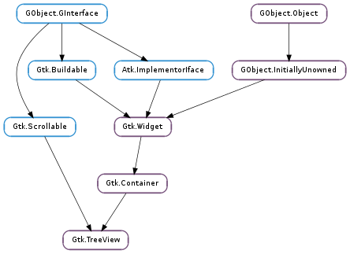

| Subclasses: | Anjuta.PkgConfigChooser, Anjuta.VcsStatusTreeView, GcrUi.ListSelector, GcrUi.TreeSelector, Gucharmap.ChaptersView, PeasGtk.PluginManagerView |
|---|
| Name | Type | Flags | Description |
|---|---|---|---|
| activate-on-single-click | bool | r/w | Activate row on a single click |
| enable-grid-lines | Gtk.TreeViewGridLines | r/w | Whether grid lines should be drawn in the tree view |
| enable-search | bool | r/w | View allows user to search through columns interactively |
| enable-tree-lines | bool | r/w | Whether tree lines should be drawn in the tree view |
| expander-column | Gtk.TreeViewColumn | r/w | Set the column for the expander column |
| fixed-height-mode | bool | r/w | Speeds up Gtk.TreeView by assuming that all rows have the same height |
| headers-clickable | bool | r/w | Column headers respond to click events |
| headers-visible | bool | r/w | Show the column header buttons |
| hover-expand | bool | r/w | Whether rows should be expanded/collapsed when the pointer moves over them |
| hover-selection | bool | r/w | Whether the selection should follow the pointer |
| level-indentation | int | r/w | Extra indentation for each level |
| model | Gtk.TreeModel | r/w | The model for the tree view |
| reorderable | bool | r/w | View is reorderable |
| rubber-banding | bool | r/w | Whether to enable selection of multiple items by dragging the mouse pointer |
| rules-hint | bool | r/w | Set a hint to the theme engine to draw rows in alternating colors |
| search-column | int | r/w | Model column to search through during interactive search |
| show-expanders | bool | r/w | View has expanders |
| tooltip-column | int | r/w | The column in the model containing the tooltip texts for the rows |
| Name | Parameters | Return | Description |
|---|---|---|---|
| columns-changed | The number of columns of the treeview has changed. | ||
| cursor-changed | The position of the cursor (focused cell) has changed. | ||
| expand-collapse-cursor-row | bool, bool, bool | bool | |
| move-cursor | Gtk.MovementStep, int | bool | |
| row-activated | Gtk.TreePath, Gtk.TreeViewColumn | The “row-activated” signal is emitted when the method Gtk.TreeView.row_activated () is called, when the user double clicks a treeview row with the “activate-on-single-click” property set to False, or when the user single clicks a row when the “activate-on-single-click” property set to True. It is also emitted when a non-editable row is selected and one of the keys: Space, Shift+Space, Return or Enter is pressed. For selection handling refer to the tree widget conceptual overview as well as Gtk.TreeSelection. | |
| row-collapsed | Gtk.TreeIter, Gtk.TreePath | The given row has been collapsed (child nodes are hidden). | |
| row-expanded | Gtk.TreeIter, Gtk.TreePath | The given row has been expanded (child nodes are shown). | |
| select-all | bool | ||
| select-cursor-parent | bool | ||
| select-cursor-row | bool | bool | |
| start-interactive-search | bool | ||
| test-collapse-row | Gtk.TreeIter, Gtk.TreePath | bool | The given row is about to be collapsed (hide its children nodes). Use this signal if you need to control the collapsibility of individual rows. |
| test-expand-row | Gtk.TreeIter, Gtk.TreePath | bool | The given row is about to be expanded (show its children nodes). Use this signal if you need to control the expandability of individual rows. |
| toggle-cursor-row | bool | ||
| unselect-all | bool |
| Name | Type | Access |
|---|---|---|
| parent | Gtk.Container | r |
Bases: Gtk.Container, Gtk.Scrollable
Widget that displays any object that implements the Gtk.TreeModel interface.
Please refer to the tree widget conceptual overview for an overview of all the objects and data types related to the tree widget and how they work together.
Several different coordinate systems are exposed in the Gtk.TreeView API. These are:
Coordinate systems in Gtk.TreeView API Widget coordinates
Coordinates relative to the widget (usuallywidget->window).
Several functions are available for converting between the different coordinate systems. The most common translations are between widget and bin window coordinates and between bin window and tree coordinates. For the former you can use Gtk.TreeView.convert_widget_to_bin_window_coords () (and vice versa), for the latter Gtk.TreeView.convert_bin_window_to_tree_coords () (and vice versa).
Gtk.TreeView as Gtk.Buildable The Gtk.TreeView implementation of the Gtk.Buildable interface accepts Gtk.TreeViewColumn objects as <child> elements and exposes the internal Gtk.TreeSelection in UI definitions.
A UI definition fragment with Gtk.TreeView
<object class="GtkTreeView" id="treeview">
<property name="model">liststore1</property>
<child>
<object class="GtkTreeViewColumn" id="test-column">
<property name="title">Test</property>
<child>
<object class="GtkCellRendererText" id="test-renderer" />
<attributes>
<attribute name="text">1</attribute>
</attributes>
</child>
</object>
</child>
<child internal-child="selection">
<object class="GtkTreeSelection" id="selection">
<signal name="changed" handler="on_treeview_selection_changed" />
</object>
</child>
</object>
| Returns: | A newly created Gtk.TreeView widget. |
|---|---|
| Return type: | Gtk.Widget |
Creates a new Gtk.TreeView widget.
| Parameters: | model (Gtk.TreeModel) – the model. |
|---|---|
| Returns: | A newly created Gtk.TreeView widget. |
| Return type: | Gtk.Widget |
Creates a new Gtk.TreeView widget with the model initialized to model.
| Parameters: | column (Gtk.TreeViewColumn) – The Gtk.TreeViewColumn to add. |
|---|---|
| Returns: | The number of columns in tree_view after appending. |
| Return type: | int |
Appends column to the list of columns. If tree_view has “fixed_height” mode enabled, then column must have its “sizing” property set to be Gtk.TreeViewColumnSizing.FIXED.
Recursively collapses all visible, expanded nodes in tree_view.
| Parameters: | path (Gtk.TreePath) – path to a row in the tree_view |
|---|---|
| Returns: | True if the row was collapsed. |
| Return type: | bool |
Collapses a row (hides its child rows, if they exist).
Resizes all columns to their optimal width. Only works after the treeview has been realized.
| Parameters: | |
|---|---|
| Return type: |
Converts bin_window coordinates to coordinates for the tree (the full scrollable area of the tree).
| Parameters: | |
|---|---|
| Return type: |
Converts bin_window coordinates (see Gtk.TreeView.get_bin_window ()) to widget relative coordinates.
| Parameters: | |
|---|---|
| Return type: |
Converts tree coordinates (coordinates in full scrollable area of the tree) to bin_window coordinates.
| Parameters: | |
|---|---|
| Return type: |
Converts tree coordinates (coordinates in full scrollable area of the tree) to widget coordinates.
| Parameters: | |
|---|---|
| Return type: |
Converts widget coordinates to coordinates for the bin_window (see Gtk.TreeView.get_bin_window ()).
| Parameters: | |
|---|---|
| Return type: |
Converts widget coordinates to coordinates for the tree (the full scrollable area of the tree).
| Parameters: | path (Gtk.TreePath) – a Gtk.TreePath in tree_view |
|---|---|
| Returns: | a newly-allocated surface of the drag icon. |
| Return type: | cairo.Surface |
Creates a cairo.Surface representation of the row at path. This image is used for a drag icon.
| Parameters: |
|
|---|
Turns tree_view into a drop destination for automatic DND. Calling this method sets Gtk.TreeView :reorderable to False.
| Parameters: |
|
|---|
Turns tree_view into a drag source for automatic DND. Calling this method sets Gtk.TreeView :reorderable to False.
Recursively expands all nodes in the tree_view.
| Parameters: |
|
|---|---|
| Returns: | True if the row existed and had children |
| Return type: |
Opens the row so its children are visible.
| Parameters: | path (Gtk.TreePath) – path to a row. |
|---|
Expands the row at path. This will also expand all parent rows of path as necessary.
| Returns: | True if row-activated will be emitted on a single click |
|---|---|
| Return type: | bool |
Gets the setting set by Gtk.TreeView.set_activate_on_single_click ().
| Parameters: |
|
|---|---|
| Return type: | rect: cairo.RectangleInt |
Fills the bounding rectangle in bin_window coordinates for the cell at the row specified by path and the column specified by column. If path is None, or points to a node not found in the tree, the y and height fields of the rectangle will be filled with 0. If column is None, the x and width fields will be filled with 0. The returned rectangle is equivalent to the background_area passed to Gtk.CellRenderer.render (). These background areas tile to cover the entire bin window. Contrast with the cell_area, returned by Gtk.TreeView.get_cell_area (), which returns only the cell itself, excluding surrounding borders and the tree expander area.
| Returns: | A Gdk.Window, or None when tree_view hasn’t been realized yet |
|---|---|
| Return type: | Gdk.Window |
Returns the window that tree_view renders to. This is used primarily to compare to event->window to confirm that the event on tree_view is on the right window.
| Parameters: |
|
|---|---|
| Return type: | rect: cairo.RectangleInt |
Fills the bounding rectangle in bin_window coordinates for the cell at the row specified by path and the column specified by column. If path is None, or points to a path not currently displayed, the y and height fields of the rectangle will be filled with 0. If column is None, the x and width fields will be filled with 0. The sum of all cell rects does not cover the entire tree; there are extra pixels in between rows, for example. The returned rectangle is equivalent to the cell_area passed to Gtk.CellRenderer.render (). This function is only valid if tree_view is realized.
| Parameters: | n (int) – The position of the column, counting from 0. |
|---|---|
| Returns: | The Gtk.TreeViewColumn, or None if the position is outside the range of columns. |
| Return type: | Gtk.TreeViewColumn |
Gets the Gtk.TreeViewColumn at the given position in the #tree_view.
| Returns: | A list of Gtk.TreeViewColumn s |
|---|---|
| Return type: | [Gtk.TreeViewColumn] |
Returns a GLib.List of all the Gtk.TreeViewColumn s currently in tree_view. The returned list must be freed with GLib.List.free ().
| Return type: | path: Gtk.TreePath, focus_column: Gtk.TreeViewColumn |
|---|
Fills in path and focus_column with the current path and focus column. If the cursor isn’t currently set, then *@path will be None. If no column currently has focus, then *@focus_column will be None.
The returned Gtk.TreePath must be freed with Gtk.TreePath.free () when you are done with it.
| Parameters: | |
|---|---|
| Returns: | whether there is a row at the given position, True if this is indeed the case. |
| Return type: | bool, path: Gtk.TreePath, pos: Gtk.TreeViewDropPosition |
Determines the destination row for a given position. drag_x and drag_y are expected to be in widget coordinates. This function is only meaningful if tree_view is realized. Therefore this function will always return False if tree_view is not realized or does not have a model.
| Return type: | path: Gtk.TreePath, pos: Gtk.TreeViewDropPosition |
|---|
Gets information about the row that is highlighted for feedback.
| Returns: | whether or not to let the user search interactively |
|---|---|
| Return type: | bool |
Returns whether or not the tree allows to start interactive searching by typing in text.
| Returns: | True if tree lines are drawn in tree_view, False otherwise. |
|---|---|
| Return type: | bool |
Returns whether or not tree lines are drawn in tree_view.
| Returns: | The expander column. |
|---|---|
| Return type: | Gtk.TreeViewColumn |
Returns the column that is the current expander column. This column has the expander arrow drawn next to it.
| Returns: | True if tree_view is in fixed height mode |
|---|---|
| Return type: | bool |
Returns whether fixed height mode is turned on for tree_view.
| Returns: | a Gtk.TreeViewGridLines value indicating which grid lines are enabled. |
|---|---|
| Return type: | Gtk.TreeViewGridLines |
Returns which grid lines are enabled in tree_view.
| Returns: | A Gtk.Adjustment object, or None if none is currently being used. |
|---|---|
| Return type: | Gtk.Adjustment |
Gets the Gtk.Adjustment currently being used for the horizontal aspect.
| Returns: | True if all header columns are clickable, otherwise False |
|---|---|
| Return type: | bool |
Returns whether all header columns are clickable.
| Returns: | Whether the headers are visible or not. |
|---|---|
| Return type: | bool |
Returns True if the headers on the tree_view are visible.
| Returns: | True if tree_view is in hover expansion mode |
|---|---|
| Return type: | bool |
Returns whether hover expansion mode is turned on for tree_view.
| Returns: | True if tree_view is in hover selection mode |
|---|---|
| Return type: | bool |
Returns whether hover selection mode is turned on for tree_view.
| Returns: | the amount of extra indentation for child levels in tree_view. A return value of 0 means that this feature is disabled. |
|---|---|
| Return type: | int |
Returns the amount, in pixels, of extra indentation for child levels in tree_view.
| Returns: | A Gtk.TreeModel, or None if none is currently being used. |
|---|---|
| Return type: | Gtk.TreeModel |
Returns the model the Gtk.TreeView is based on. Returns None if the model is unset.
| Returns: | The number of columns in the tree_view |
|---|---|
| Return type: | int |
Queries the number of columns in the given tree_view.
| Parameters: | |
|---|---|
| Returns: | True if a row exists at that coordinate. |
| Return type: | bool, path: Gtk.TreePath, column: Gtk.TreeViewColumn, cell_x: int, cell_y: int |
Finds the path at the point (x, y ), relative to bin_window coordinates (please see Gtk.TreeView.get_bin_window ()). That is, x and y are relative to an events coordinates. x and y must come from an event on the tree_view only where event->window == gtk_tree_view_get_bin_window (). It is primarily for things like popup menus. If path is non-None, then it will be filled with the Gtk.TreePath at that point. This path should be freed with Gtk.TreePath.free (). If column is non-None, then it will be filled with the column at that point. cell_x and cell_y return the coordinates relative to the cell background (i.e. the background_area passed to Gtk.CellRenderer.render ()). This function is only meaningful if tree_view is realized. Therefore this function will always return False if tree_view is not realized or does not have a model.
For converting widget coordinates (eg. the ones you get from Gtk.Widget ::query-tooltip ), please see Gtk.TreeView.convert_widget_to_bin_window_coords ().
| Returns: | True if the tree can be reordered. |
|---|---|
| Return type: | bool |
Retrieves whether the user can reorder the tree via drag-and-drop. See Gtk.TreeView.set_reorderable ().
| Returns: | True if rubber banding in tree_view is enabled. |
|---|---|
| Return type: | bool |
Returns whether rubber banding is turned on for tree_view. If the selection mode is Gtk.SelectionMode.MULTIPLE, rubber banding will allow the user to select multiple rows by dragging the mouse.
| Returns: | True if rules are useful for the user of this tree |
|---|---|
| Return type: | bool |
Gets the setting set by Gtk.TreeView.set_rules_hint ().
| Returns: | the column the interactive search code searches in. |
|---|---|
| Return type: | int |
Gets the column searched on by the interactive search code.
| Returns: | the entry currently in use as search entry. |
|---|---|
| Return type: | Gtk.Entry |
Returns the Gtk.Entry which is currently in use as interactive search entry for tree_view. In case the built-in entry is being used, None will be returned.
| Returns: | A Gtk.TreeSelection object. |
|---|---|
| Return type: | Gtk.TreeSelection |
Gets the Gtk.TreeSelection associated with tree_view.
| Returns: | True if expanders are drawn in tree_view, False otherwise. |
|---|---|
| Return type: | bool |
Returns whether or not expanders are drawn in tree_view.
| Returns: | the index of the tooltip column that is currently being used, or -1 if this is disabled. |
|---|---|
| Return type: | int |
Returns the column of tree_view ‘s model which is being used for displaying tooltips on tree_view ‘s rows.
| Parameters: | |
|---|---|
| Returns: | whether or not the given tooltip context points to a row. |
| Return type: | bool, x: int, y: int, model: Gtk.TreeModel, path: Gtk.TreePath, iter: Gtk.TreeIter |
This function is supposed to be used in a Gtk.Widget ::query-tooltip signal handler for Gtk.TreeView. The x, y and keyboard_tip values which are received in the signal handler, should be passed to this function without modification.
The return value indicates whether there is a tree view row at the given coordinates (True ) or not (False ) for mouse tooltips. For keyboard tooltips the row returned will be the cursor row. When True, then any of model, path and iter which have been provided will be set to point to that row and the corresponding model. x and y will always be converted to be relative to tree_view ‘s bin_window if keyboard_tooltip is False.
| Returns: | A Gtk.Adjustment object, or None if none is currently being used. |
|---|---|
| Return type: | Gtk.Adjustment |
Gets the Gtk.Adjustment currently being used for the vertical aspect.
| Returns: | True, if valid paths were placed in start_path and end_path. |
|---|---|
| Return type: | bool, start_path: Gtk.TreePath, end_path: Gtk.TreePath |
Sets start_path and end_path to be the first and last visible path. Note that there may be invisible paths in between.
The paths should be freed with Gtk.TreePath.free () after use.
| Return type: | visible_rect: cairo.RectangleInt |
|---|
Fills visible_rect with the currently-visible region of the buffer, in tree coordinates. Convert to bin_window coordinates with Gtk.TreeView.convert_tree_to_bin_window_coords (). Tree coordinates start at 0,0 for row 0 of the tree, and cover the entire scrollable area of the tree.
| Parameters: |
|
|---|---|
| Returns: | The number of columns in tree_view after insertion. |
| Return type: |
This inserts the column into the tree_view at position. If position is -1, then the column is inserted at the end. If tree_view has “fixed_height” mode enabled, then column must have its “sizing” property set to be Gtk.TreeViewColumnSizing.FIXED.
Creates a new Gtk.TreeViewColumn and inserts it into the tree_view at position. If position is -1, then the newly created column is inserted at the end. The column is initialized with the attributes given. If tree_view has “fixed_height” mode enabled, then the new column will have its sizing property set to be Gtk.TreeViewColumnSizing.FIXED.
| Parameters: |
|
|---|---|
| Returns: | number of columns in the tree view post-insert |
| Return type: |
Convenience function that inserts a new column into the Gtk.TreeView with the given cell renderer and a Gtk.TreeCellDataFunc to set cell renderer attributes (normally using data from the model). See also Gtk.TreeViewColumn.set_cell_data_func (), Gtk.TreeViewColumn.pack_start (). If tree_view has “fixed_height” mode enabled, then the new column will have its “sizing” property set to be Gtk.TreeViewColumnSizing.FIXED.
| Parameters: | |
|---|---|
| Returns: | True if the area at the given coordinates is blank, False otherwise. |
| Return type: | bool, path: Gtk.TreePath, column: Gtk.TreeViewColumn, cell_x: int, cell_y: int |
Determine whether the point (x, y ) in tree_view is blank, that is no cell content nor an expander arrow is drawn at the location. If so, the location can be considered as the background. You might wish to take special action on clicks on the background, such as clearing a current selection, having a custom context menu or starting rubber banding.
The x and y coordinate that are provided must be relative to bin_window coordinates. That is, x and y must come from an event on tree_view where event->window == gtk_tree_view_get_bin_window ().
For converting widget coordinates (eg. the ones you get from Gtk.Widget ::query-tooltip ), please see Gtk.TreeView.convert_widget_to_bin_window_coords ().
The path, column, cell_x and cell_y arguments will be filled in likewise as for Gtk.TreeView.get_path_at_pos (). Please see Gtk.TreeView.get_path_at_pos () for more information.
| Returns: | True if a rubber banding operation is currently being done in tree_view. |
|---|---|
| Return type: | bool |
Returns whether a rubber banding operation is currently being done in tree_view.
| Parameters: |
|
|---|
Calls func on all expanded rows.
| Parameters: |
|
|---|
Moves column to be after to base_column. If base_column is None, then column is placed in the first position.
| Parameters: | column (Gtk.TreeViewColumn) – The Gtk.TreeViewColumn to remove. |
|---|---|
| Returns: | The number of columns in tree_view after removing. |
| Return type: | int |
Removes column from tree_view.
| Parameters: |
|
|---|
Activates the cell determined by path and column.
| Parameters: | path (Gtk.TreePath) – A Gtk.TreePath to test expansion state. |
|---|---|
| Returns: | True if #path is expanded. |
| Return type: | bool |
Returns True if the node pointed to by path is expanded in tree_view.
| Parameters: |
|
|---|
Moves the alignments of tree_view to the position specified by column and path. If column is None, then no horizontal scrolling occurs. Likewise, if path is None no vertical scrolling occurs. At a minimum, one of column or path need to be non-None. row_align determines where the row is placed, and col_align determines where column is placed. Both are expected to be between 0.0 and 1.0. 0.0 means left/top alignment, 1.0 means right/bottom alignment, 0.5 means center.
If use_align is False, then the alignment arguments are ignored, and the tree does the minimum amount of work to scroll the cell onto the screen. This means that the cell will be scrolled to the edge closest to its current position. If the cell is currently visible on the screen, nothing is done.
This function only works if the model is set, and path is a valid row on the model. If the model changes before the tree_view is realized, the centered path will be modified to reflect this change.
| Parameters: |
|---|
Scrolls the tree view such that the top-left corner of the visible area is tree_x, tree_y, where tree_x and tree_y are specified in tree coordinates. The tree_view must be realized before this function is called. If it isn’t, you probably want to be using Gtk.TreeView.scroll_to_cell ().
If either tree_x or tree_y are -1, then that direction isn’t scrolled.
| Parameters: | single (bool) – True to emit row-activated on a single click |
|---|
Cause the Gtk.TreeView ::row-activated signal to be emitted on a single click instead of a double click.
| Parameters: |
|
|---|
Sets a user function for determining where a column may be dropped when dragged. This function is called on every column pair in turn at the beginning of a column drag to determine where a drop can take place. The arguments passed to func are: the tree_view, the Gtk.TreeViewColumn being dragged, the two Gtk.TreeViewColumn s determining the drop spot, and user_data. If either of the Gtk.TreeViewColumn arguments for the drop spot are None, then they indicate an edge. If func is set to be None, then tree_view reverts to the default behavior of allowing all columns to be dropped everywhere.
| Parameters: |
|
|---|
Sets the current keyboard focus to be at path, and selects it. This is useful when you want to focus the user’s attention on a particular row. If focus_column is not None, then focus is given to the column specified by it. Additionally, if focus_column is specified, and start_editing is True, then editing should be started in the specified cell. This function is often followed by gtk_widget_grab_focus (tree_view ) in order to give keyboard focus to the widget. Please note that editing can only happen when the widget is realized.
If path is invalid for model, the current cursor (if any) will be unset and the function will return without failing.
| Parameters: |
|
|---|
Sets the current keyboard focus to be at path, and selects it. This is useful when you want to focus the user’s attention on a particular row. If focus_column is not None, then focus is given to the column specified by it. If focus_column and focus_cell are not None, and focus_column contains 2 or more editable or activatable cells, then focus is given to the cell specified by focus_cell. Additionally, if focus_column is specified, and start_editing is True, then editing should be started in the specified cell. This function is often followed by gtk_widget_grab_focus (tree_view ) in order to give keyboard focus to the widget. Please note that editing can only happen when the widget is realized.
If path is invalid for model, the current cursor (if any) will be unset and the function will return without failing.
| Parameters: |
|
|---|
This function should almost never be used. It is meant for private use by ATK for determining the number of visible children that are removed when the user collapses a row, or a row is deleted.
| Parameters: |
|
|---|
Sets the row that is highlighted for feedback. If path is None, an existing highlight is removed.
| Parameters: | enable_search (bool) – True, if the user can search interactively |
|---|
If enable_search is set, then the user can type in text to search through the tree interactively (this is sometimes called “typeahead find”).
Note that even if this is False, the user can still initiate a search using the “start-interactive-search” key binding.
| Parameters: | enabled (bool) – True to enable tree line drawing, False otherwise. |
|---|
Sets whether to draw lines interconnecting the expanders in tree_view. This does not have any visible effects for lists.
| Parameters: | column (Gtk.TreeViewColumn) – None, or the column to draw the expander arrow at. |
|---|
Sets the column to draw the expander arrow at. It must be in tree_view. If column is None, then the expander arrow is always at the first visible column.
If you do not want expander arrow to appear in your tree, set the expander column to a hidden column.
| Parameters: | enable (bool) – True to enable fixed height mode |
|---|
Enables or disables the fixed height mode of tree_view. Fixed height mode speeds up Gtk.TreeView by assuming that all rows have the same height. Only enable this option if all rows are the same height and all columns are of type Gtk.TreeViewColumnSizing.FIXED.
| Parameters: | grid_lines (Gtk.TreeViewGridLines) – a Gtk.TreeViewGridLines value indicating which grid lines to enable. |
|---|
Sets which grid lines to draw in tree_view.
| Parameters: | adjustment (Gtk.Adjustment or None) – The Gtk.Adjustment to set, or None |
|---|
Sets the Gtk.Adjustment for the current horizontal aspect.
| Parameters: | setting (bool) – True if the columns are clickable. |
|---|
Allow the column title buttons to be clicked.
| Parameters: | headers_visible (bool) – True if the headers are visible |
|---|
Sets the visibility state of the headers.
| Parameters: | expand (bool) – True to enable hover selection mode |
|---|
Enables or disables the hover expansion mode of tree_view. Hover expansion makes rows expand or collapse if the pointer moves over them.
| Parameters: | hover (bool) – True to enable hover selection mode |
|---|
Enables or disables the hover selection mode of tree_view. Hover selection makes the selected row follow the pointer. Currently, this works only for the selection modes Gtk.SelectionMode.SINGLE and Gtk.SelectionMode.BROWSE.
| Parameters: | indentation (int) – the amount, in pixels, of extra indentation in tree_view. |
|---|
Sets the amount of extra indentation for child levels to use in tree_view in addition to the default indentation. The value should be specified in pixels, a value of 0 disables this feature and in this case only the default indentation will be used. This does not have any visible effects for lists.
| Parameters: | model (Gtk.TreeModel or None) – The model. |
|---|
Sets the model for a Gtk.TreeView. If the tree_view already has a model set, it will remove it before setting the new model. If model is None, then it will unset the old model.
| Parameters: | reorderable (bool) – True, if the tree can be reordered. |
|---|
This function is a convenience function to allow you to reorder models that support the Gtk.TreeDragSourceIface and the Gtk.TreeDragDestIface. Both Gtk.TreeStore and Gtk.ListStore support these. If reorderable is True, then the user can reorder the model by dragging and dropping rows. The developer can listen to these changes by connecting to the model’s row_inserted and row_deleted signals. The reordering is implemented by setting up the tree view as a drag source and destination. Therefore, drag and drop can not be used in a reorderable view for any other purpose.
This function does not give you any degree of control over the order – any reordering is allowed. If more control is needed, you should probably handle drag and drop manually.
| Parameters: |
|
|---|
Sets the row separator function, which is used to determine whether a row should be drawn as a separator. If the row separator function is None, no separators are drawn. This is the default value.
| Parameters: | enable (bool) – True to enable rubber banding |
|---|
Enables or disables rubber banding in tree_view. If the selection mode is Gtk.SelectionMode.MULTIPLE, rubber banding will allow the user to select multiple rows by dragging the mouse.
| Parameters: | setting (bool) – True if the tree requires reading across rows |
|---|
This function tells GTK+ that the user interface for your application requires users to read across tree rows and associate cells with one another. By default, GTK+ will then render the tree with alternating row colors. Do not use it just because you prefer the appearance of the ruled tree; that’s a question for the theme. Some themes will draw tree rows in alternating colors even when rules are turned off, and users who prefer that appearance all the time can choose those themes. You should call this function only as a semantic hint to the theme engine that your tree makes alternating colors useful from a functional standpoint (since it has lots of columns, generally).
| Parameters: | column (int) – the column of the model to search in, or -1 to disable searching |
|---|
Sets column as the column where the interactive search code should search in for the current model.
If the search column is set, users can use the “start-interactive-search” key binding to bring up search popup. The enable-search property controls whether simply typing text will also start an interactive search.
Note that column refers to a column of the current model. The search column is reset to -1 when the model is changed.
| Parameters: | entry (Gtk.Entry or None) – the entry the interactive search code of tree_view should use or None |
|---|
Sets the entry which the interactive search code will use for this tree_view. This is useful when you want to provide a search entry in our interface at all time at a fixed position. Passing None for entry will make the interactive search code use the built-in popup entry again.
| Parameters: |
|
|---|
Sets the compare function for the interactive search capabilities; note that somewhat like strcmp() returning 0 for equality Gtk.TreeViewSearchEqualFunc returns False on matches.
| Parameters: |
|
|---|
Sets the function to use when positioning the search dialog.
| Parameters: | enabled (bool) – True to enable expander drawing, False otherwise. |
|---|
Sets whether to draw and enable expanders and indent child rows in tree_view. When disabled there will be no expanders visible in trees and there will be no way to expand and collapse rows by default. Also note that hiding the expanders will disable the default indentation. You can set a custom indentation in this case using Gtk.TreeView.set_level_indentation (). This does not have any visible effects for lists.
| Parameters: |
|
|---|
Sets the tip area of tooltip to the area path, column and cell have in common. For example if path is None and column is set, the tip area will be set to the full area covered by column. See also Gtk.Tooltip.set_tip_area ().
Note that if path is not specified and cell is set and part of a column containing the expander, the tooltip might not show and hide at the correct position. In such cases path must be set to the current node under the mouse cursor for this function to operate correctly.
See also Gtk.TreeView.set_tooltip_column () for a simpler alternative.
| Parameters: | column (int) – an integer, which is a valid column number for tree_view ‘s model |
|---|
If you only plan to have simple (text-only) tooltips on full rows, you can use this function to have Gtk.TreeView handle these automatically for you. column should be set to the column in tree_view ‘s model containing the tooltip texts, or -1 to disable this feature.
When enabled, Gtk.Widget :has-tooltip will be set to True and tree_view will connect a Gtk.Widget ::query-tooltip signal handler.
Note that the signal handler sets the text with Gtk.Tooltip.set_markup (), so &, <, etc have to be escaped in the text.
| Parameters: |
|
|---|
Sets the tip area of tooltip to be the area covered by the row at path. See also Gtk.TreeView.set_tooltip_column () for a simpler alternative. See also Gtk.Tooltip.set_tip_area ().
| Parameters: | adjustment (Gtk.Adjustment or None) – The Gtk.Adjustment to set, or None |
|---|
Sets the Gtk.Adjustment for the current vertical aspect.
Undoes the effect of Gtk.TreeView.enable_model_drag_dest (). Calling this method sets Gtk.TreeView :reorderable to False.
Undoes the effect of Gtk.TreeView.enable_model_drag_source (). Calling this method sets Gtk.TreeView :reorderable to False.